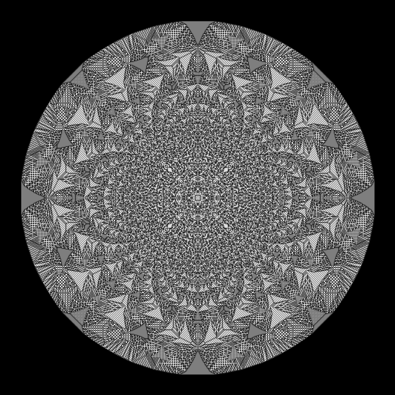
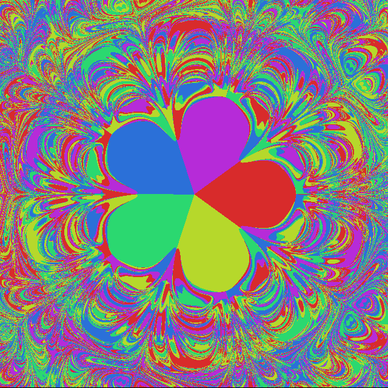
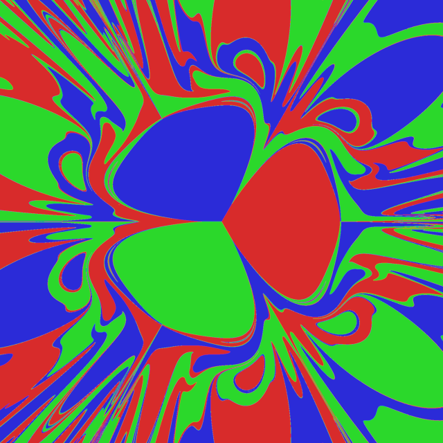
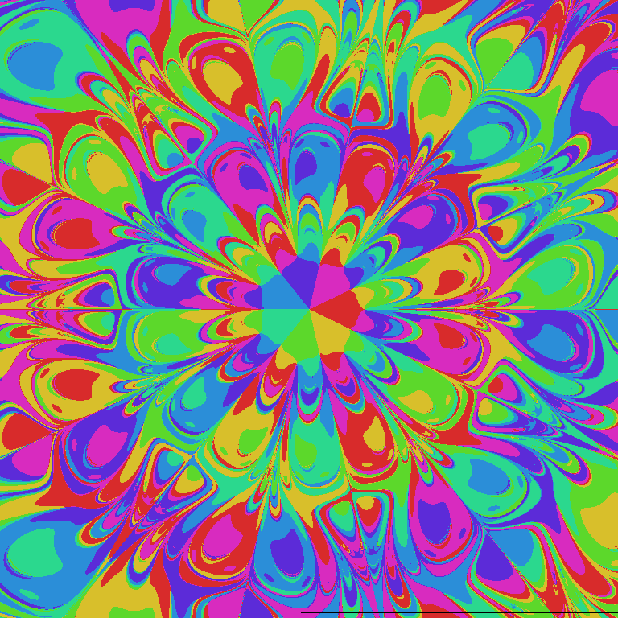
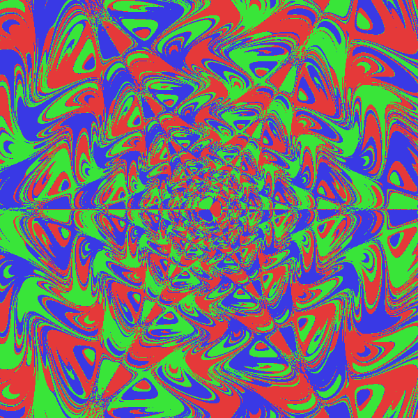

Tässä on kuva joskus teininä blitz 3D:llä kirjotetun Sand Pile-implementaation ulosannista:
Tosin tämä ei ollut ihan perusimplementaatio, tässä hiekka jakaantuu suuremmalle alueelle kuin vain viereisille pikseleille.
Magneettinen heiluri. Tämä on Processing3-ympäristössä kehitetty ohjelma, joka simuloi magneettista heiluria (tai ehkä enemmänkin staattisia painovoimakeskittymiä ja liikkuvaa reaktiomassaa, oli helpompi kirjoittaa) ja siten piirtää hienoja fraktaaleja.
   Seuraavasta kahdesta kuvasta näkee minkälainen vaikutus simulaation aika-askeleella (time step) on. Alemmassa kuvassa se on liian pieni, jolloin kuvaan syntyy artefakteja.
TODO: tähän voisi kaivella kuvan vaikkapa isälle tehdystä.